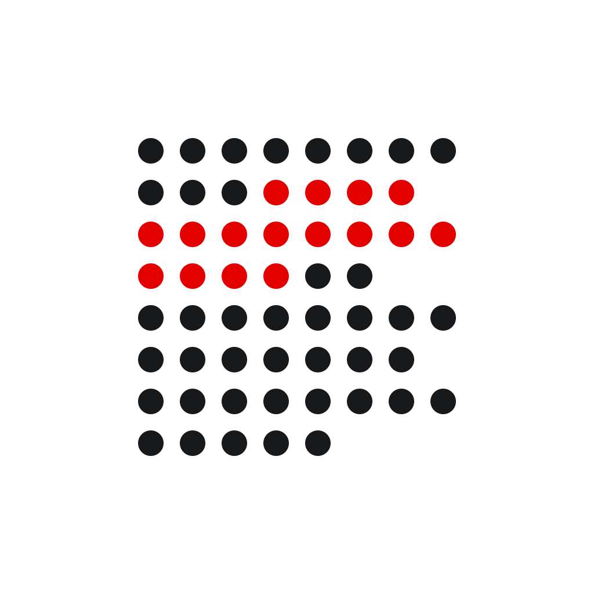
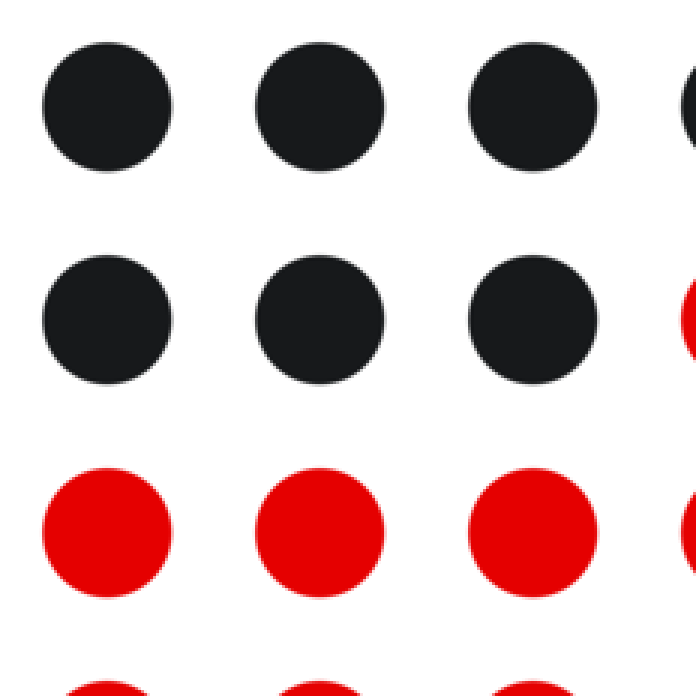

Intake mark — pixel-grid lab
The small icons are deliberate simplified variants of the full 6×6 mark — a 3×3 grid at
16px, a 4×4 grid at 32/48/64px. Those layouts are kept exactly. The fuzziness came from
fractional dot diameters (3.5px, 5.5px, 7.9px, 10.5px), which put every dot edge inside a
pixel rather than on a boundary. The fix (lab/render-marks.mjs): keep each
variant's centers and colors, and round each dot diameter to the integer that lands its
edges on pixel boundaries. The 8×8 mac app icon had the same problem
(lab/render-appicon.mjs). Zoomed views below are nearest-neighbor scaled; the
strips underneath show the icon at retina scale — half its pixel size, one image pixel per
device pixel on a 2× display.
In context
Each mockup uses the exact asset the environment picks on a 2× display, at its real point size — so what you see here is what ships. (These imitate their host UIs, so they keep fixed light/dark colors regardless of the page theme.)
Chrome toolbar — 16pt
icon-32.png at 16pt — Chrome picks the 32px asset on a 2× display.
Safari toolbar — 16pt
icon-32.png at 16pt (Safari shares the extension icon set).
chrome://extensions card — 36pt
Intake for Obsidian 1.0.0
Capture the web into your Obsidian vault.
Intake for Obsidian 1.0.0
Capture the web into your Obsidian vault.
The card requests 36pt = 72px, so Chrome downscales icon-128.png.
Chrome Web Store listing — 96pt
Intake for Obsidian
diklein.com
Add to ChromeIntake for Obsidian
diklein.com
Add to ChromeThe store serves the 128px store icon at ~96pt on the listing page.
macOS Dock — 64pt
The 128px icns tier (our dedicated snapped render) at the default 64pt Dock size.
Mac App Store product page — 175pt

Intake for Obsidian
Capture the web into your Obsidian vault.
GetThe App Store scales the 1024 down to the ~175pt product-page hero.
16 px re-rendered
3×3 variant. Before: ~3.5px dots, soft fringe on every side. After: 4px dots at the same centers (3 / 8 / 13) — every edge on a pixel boundary, clean 1px gaps.
32 px re-rendered
4×4 variant. Before: ~5.5px dots on a 7px pitch, edges inside pixels. After: 5px dots at the same centers (5.5 + 7i) — the half-integer centers put every edge of an odd-diameter dot exactly on a pixel boundary.
48 px re-rendered
4×4 variant. Before: a 0.75× downscale of the 64 — ~7.9px dots and a pitch that drifted to a 10 / 11 / 10 rhythm. After: 8px dots on a regular 10px pitch (centers moved at most 0.5px), integer edges, symmetric margins.
64 px re-rendered
4×4 variant. Before: ~10.5px dots on a 14px pitch — the odd half-pixel of diameter smears both edges. After: 10px dots at the same centers (11 + 14i) — integer edges, only the circle's corners anti-alias.
128 px recolored
The full 6×6 mark: 10px dots on integer centers — the geometry was already
on the pixel grid, so it is unchanged. But this size (and the store icon and master SVG)
still had black #17191b dots, missing the black→gray #7d8288
dark-mode update the smaller sizes got. Now recolored to match.
1024 px mac app icon re-rendered
The 8×8 grid on the white squircle. Before: ~44.6px dots on a 71px pitch — fractional edges at 1:1, and the odd pitch meant the 512px half-scale (how it renders on a non-retina display) landed every edge on a half-pixel. After: 44px dots on a 72px pitch, first center at 260 — all even numbers, so both the 1024 and its 512 half-scale sit exactly on the grid (centers moved at most 3.5px; the background layer is untouched). The full AppIcon set was regenerated from it, with dedicated snapped renders at 256 and 128 too. Detail below: the top-left dots at 3× (1.5× on a retina display).

Geometry summary
| Size | Before | After (snapped) |
|---|---|---|
| 16 | 3×3, d ≈ 3.5, pitch 5 | d = 4 at the same centers (3 + 5i) → integer edges |
| 32 | 4×4, d ≈ 5.5, pitch 7 | d = 5 at the same centers (5.5 + 7i) → integer edges |
| 48 | 4×4, d ≈ 7.9, pitch 10 / 11 / 10 | d = 8, regular pitch 10 (centers 9 + 10i) → integer edges |
| 64 | 4×4, d ≈ 10.5, pitch 14 | d = 10 at the same centers (11 + 14i) → integer edges |
| 128 | full 6×6 mark, black dots | geometry unchanged (already aligned); recolored black → gray |
| 1024 | 8×8 mark, d ≈ 44.6, pitch 71 (odd) | d = 44, pitch 72, first center 260 — even values, aligned at 1024 and at 512 half-scale |
Regenerate any time: node lab/render-marks.mjs
writes the extension icons (Chrome and Safari share them), and node lab/render-appicon.mjs
rebuilds the mac AppIcon set from the original artwork kept in lab/assets/before/.